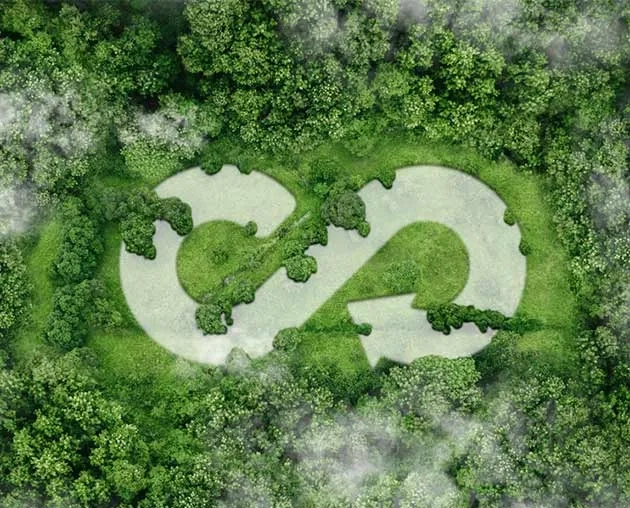
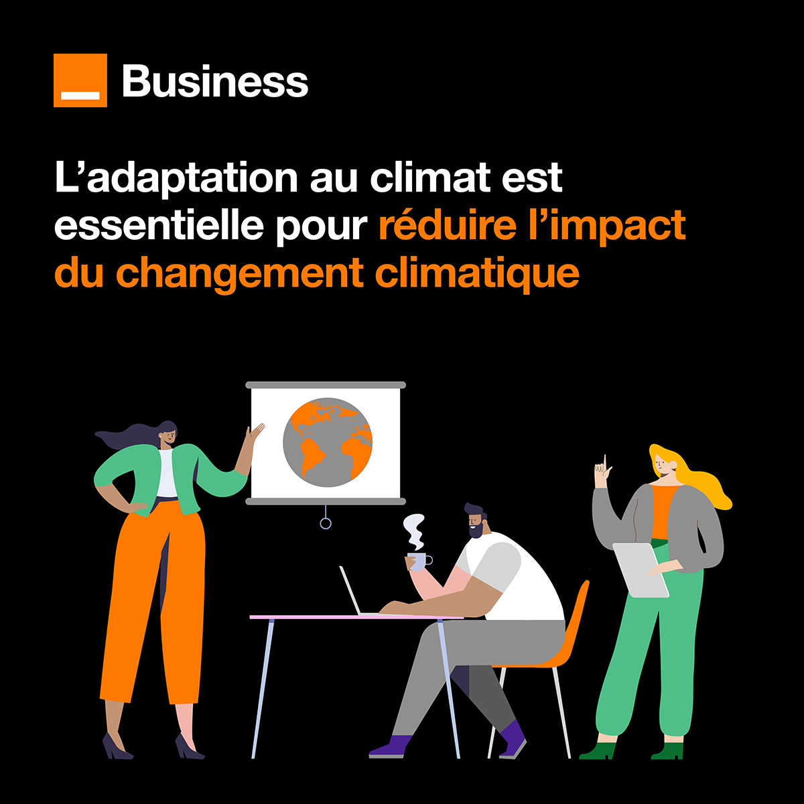

La transition écologique chez Orange Business
Orange Business aide les entreprises à adopter une politique de transition écologique. Nous nous engageons dans la lutte contre le changement climatique et la consommation responsable.
La première étape d’une transformation responsable consiste à comprendre et mesurer l’empreinte de son activité. Nous permettons à nos clients de comprendre et mesurer son empreinte carbone et environnementale. Nous les aidons à s’adapter aux nouvelles réglementations, à assurer la performance durable de leur organisation et nous proposons des solutions utilisant des outils numériques pour optimiser l’efficacité énergétique.
Nous travaillons sur 3 sources afin de réduire la pollution numérique : nos équipements, nos infrastructures réseaux avec des infrastructures cloud optimisées, nos Data Centers en France et nous travaillons à l’optimisation de neuf Data Centers en Europe.
